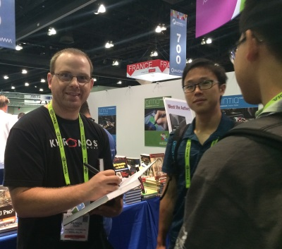
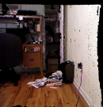
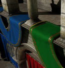
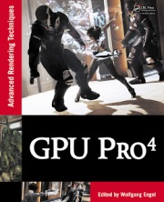
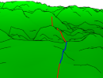
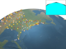
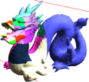
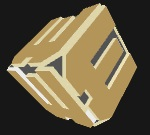
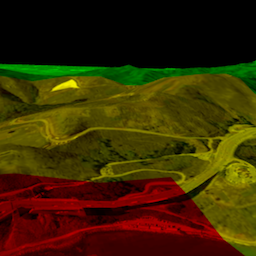
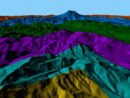

|
Patrick Cozzi @pjcozzi pjcozzi@siggraph.org
Principal Graphics Architect
Lecturer Short CV (08/2016) |
 |
About Me

I work at the intersection of computer graphics, geospatial, and the web in software development and education.
DMD and CGGT students - I am seeking students for independent study projects in Spring 2017.
My contributions to the field include
- Starting Cesium, an open-source JavaScript library for world-class 3D globes and maps
- Writing and editing books: WebGL Insights, OpenGL Insights, and 3D Engine Design for Virtual Globes
- Co-creating glTF, the runtime asset format for WebGL, OpenGL ES, and OpenGL
- Starting 3D Tiles for streaming massive heterogeneous 3D geospatial datasets (in progress)
- Teaching GPU Programming and Architecture, with students that received positions at NVIDIA, AMD, Qualcomm, and various game and movie studios
- Giving talks at SIGGRAPH, FOSS4G, and COM.Geo, and other conferences
- Writing chapters for the GPU Pro and Game Engine Gems series
- Reviewing various graphics courses, books, and publications. I'm on the editorial board for the Journal of Computer Graphics Techniques (JCGT)
My interests include
- Computer graphics - WebGL, OpenGL, virtual globes, massive models, 3D engine design, asset formats, real-time rendering, and GPU architecture
- Software development - framework design, unit testing, parallelism, JavaScript, Node.js, recruitment, and technical interviews
- Open source software - development practices, building community, culture, code sprints, hackathons, and business models
- Moving our field forward - teaching, giving talks, writing, editing, and mentoring
Books
|
WebGL Insights. CRC Press. Patrick Cozzi, Editor |
07/2015 |
 |
OpenGL Insights. CRC Press. Patrick Cozzi and Christophe Riccio, Editors |
07/2012 |
|
|
3D Engine Design for Virtual Globes. A K Peters/CRC Press. Patrick Cozzi and Kevin Ring |
06/2011 |
Teaching
|
|
Fall 2015: CIS 565: GPU Programming and Architecture |
| Fall 2014: CIS 565: GPU Programming and Architecture |
| Spring 2014: CIS 700/003: Real-Time Rendering |
| Fall 2013: CIS 565: GPU Programming and Architecture |
| Fall 2012: CIS 565: GPU Programming and Architecture |
| Spring 2012: CIS 565: GPU Programming and Architecture |
| Spring 2011: CIS 565: GPU Programming and Architecture |
Advising
 |
Spring 2016: WebGL 2 Samples Pack by Shuai Shao (Shrek) and Trung Le. |
 |
Spring 2016: glTF Pipeline by Richard Lee. |
|
|
Spring 2015: Image-Based Lighting by Cheng-Tso Lin. |
|

|
Spring 2015: Voxel Map Construction and Rendering by Dave Kotfis. |
|

|
Fall 2012: Real-Time Voxels by Sean Lilley, Ian Lilley, and Nop Jiarathanakul. |
Book Chapters
|
GPU Pro 7. CRC Press. Wolfgang Engel, Editor Octree Mapping from a Depth Camera Dave Kotfis and Patrick Cozzi |
Expected 03/2016 |
|
GPU Pro 5. CRC Press. Wolfgang Engel, Editor glTF: Designing an Open-Standard Runtime Asset Format Fabrice Robinet, Remi Arnaud, Tony Parisi, and Patrick Cozzi |
05/2014 |
|  |
GPU Pro 4. CRC Press. Wolfgang Engel, Editor A WebGL Globe Rendering Pipeline Patrick Cozzi and Daniel Bagnell |
04/2013 |
|
|
OpenGL Insights. CRC Press. Patrick Cozzi and Christophe Riccio, Editors WebGL for OpenGL Developers Patrick Cozzi and Scott Hunter |
07/2012 |
|
Game Engine Gems 2. A K Peters/CRC Press. Eric Lengyel, Series Editor Delaying OpenGL Calls Patrick Cozzi A Framework for GLSL Engine Uniforms Patrick Cozzi |
02/2011 |
Selected Publications
|  |
A Screen-Space Approach to Rendering Polylines on Terrain. SIGGRAPH 2011 Poster Session. Deron Ohlarik and Patrick Cozzi |
08/2011 |
|  |
GPU Ray Casting of Virtual Globes. SIGGRAPH 2010 Poster Session. Patrick Cozzi and Frank Stoner |
07/2010 |
|  |
Visibility Driven Out-of-Core HLOD Rendering. Masters Thesis. Patrick Cozzi, Thesis Advisor: Dr. Norman Badler |
12/2008 |
Selected Talks and Short Courses
| Teaching Computer Graphics Inside a Browser: WebGL and Three.js. SIGGRAPH Educators Panel Ed Angel, Dave Shreiner, Eric Haines, and Patrick Cozzi | 07/2016 |
|  | The Open Cesium 3D Tiles Specification: Bringing Massive Geospatial 3D Scenes to the Web. Web3D Patrick Cozzi and Sean Lilley | 07/2016 |
| 3D Tiles: Beyond 2D Tiling, 05/2016, FOSS4G NA, Sean Lilley and Patrick Cozzi. FOSS4G NA Sean Lilley and Patrick Cozzi | 05/2016 |
| Growing an Open-Source Community: Lessons Learned from Cesium. FOSS4G NA Patrick Cozzi | 05/2016 |
| 3D Tiles: streaming massive heterogeneous 3D geospatial datasets. OGC TC Meeting Closing Plenary Patrick Cozzi | 03/2016 |
| Getting Started with Open-Source Software Development. University of Pennsylvania Dining Philosophers Patrick Cozzi | 11/2015 |
| The State of WebGL and glTF. The Graphical Web Patrick Cozzi | 09/2015 |
| Preparing Students for Industry Using Open Source and GitHub. In the Educators Sessions. SIGGRAPH Harmony Li and Patrick Cozzi | 08/2015 |
| What's new in Cesium: the open-source alternative for 3D maps. FOSS4G Patrick Cozzi | 09/2014 |
| Teaching Intro and Advanced Graphics with WebGL. In the Educators BOF. SIGGRAPH Patrick Cozzi and Ed Angel | 08/2014 |

|
Cesium, CZML, and glTF. In the Geospatial information on the Web workshop. Web3D Patrick Cozzi | 08/2014 |
|  | Using Multiple Frustums for Massive Worlds. In Rendering Massive Virtual Worlds Course. SIGGRAPH Patrick Cozzi | 07/2013 |
| Cesium: 3D Maps on the Web. FOSS4G NA Patrick Cozzi | 05/2013 |
|
|
Cesium: Geo-Scale Data Visualization in a Web Browser. MIT Lincoln Labs Patrick Cozzi | 10/2012 |
|
Cesium: WebGL for Globes and Maps. SIGGRAPH WebGL BOF
[slides • video] Patrick Cozzi |
08/2012 |
|
|
WebGL for Dynamic Virtual Globes. WebGL Camp Orlando
[slides • video] Patrick Cozzi |
03/2012 |
|  |
Under the Hood of Virtual Globes. COM.Geo Courses. Patrick Cozzi and Kevin Ring |
05/2011 |
|
Introduction to Massive Model Rendering. Villanova University Computer Science Colloquium. Patrick Cozzi |
03/2009 |
Selected Blog Posts
Cesium Presenter's Guide • Graphics Tech in Cesium: Rendering a Frame, Renderer Architecture, and The Graphics Stack • How to make an attractive GitHub repo • WebGL Deferred Shading • Building a WebGL Santa with Cesium and glTF • WebGL Debugging and Profiling Tools • GitHub Pull Request Workflows • Reflections on Teaching GPU Programming and Architecture: Part I, Part II, and Part III • NORAD Tracks Santa Tech Preview • Open Source Development Practices • How developers can get into teaching • Resume Tips for Computer Science Students • Rendering Text Fast • Picking using the Depth Buffer • Deletion in Bounding Volume Hierarchies